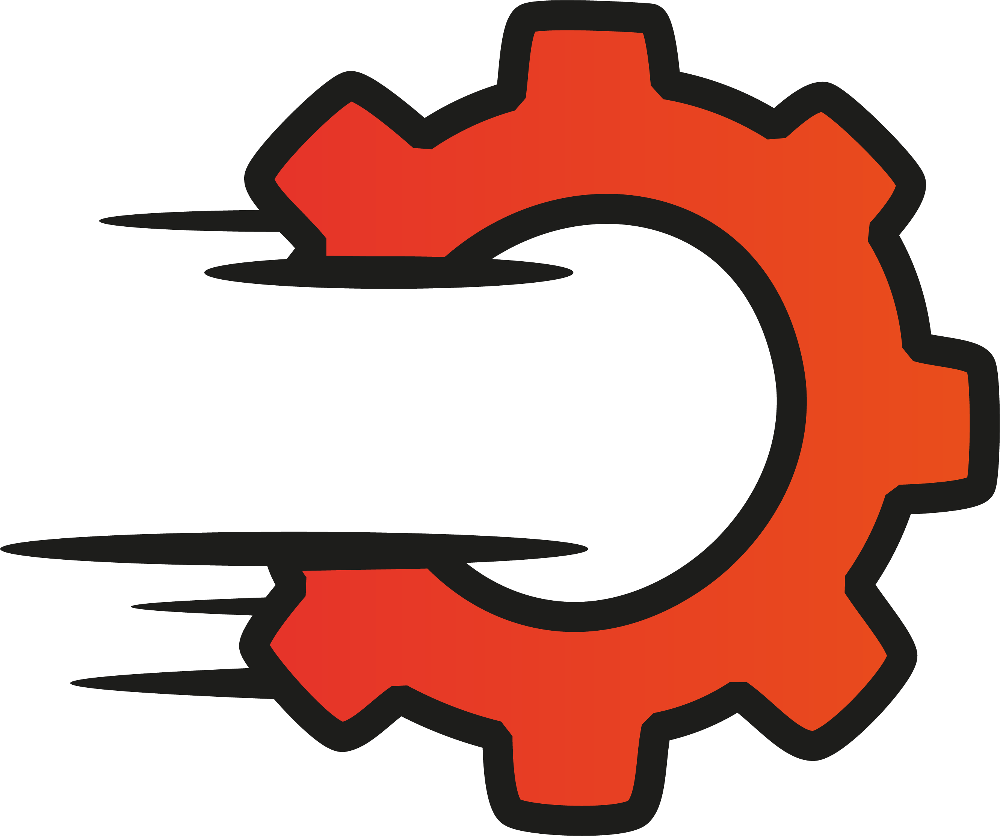
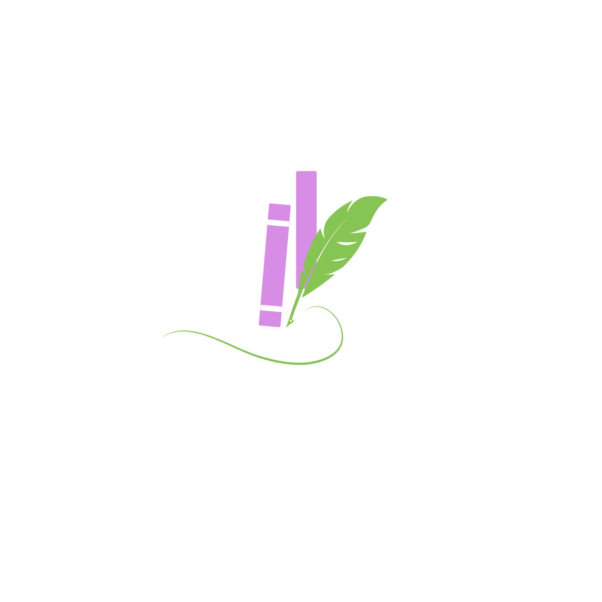

Portafolio 2025
Cronología de innovaciones y colaboraciones estratégicas.
↓
Marzo 2025

DIO-DIM
Sistema de inteligencia para la Dirección de Operaciones Migratorias. Plataforma de alta seguridad para generación y validación de credenciales QR en tiempo real.
Ver Proyecto →
Seguridad
QR Gen
Gobierno
Abril 2025

fixRD
Consultoría 360° para startup tecnológica. Desarrollo de app multiplataforma, identidad corporativa completa y estrategia de lanzamiento al mercado.
App Dev
Branding
Strategy
Septiembre 2025

Lilaila Book
Fusión de diseño físico y digital. Producción de assets impresos (DTF) y tarjetas inteligentes para una marca de literatura moderna.
Instagram →
Print Design
DTF
Social
Próximamente 2026

Cinéfilo
El futuro del streaming nicho. Plataforma web inmersiva para críticos y amantes del cine, con una identidad visual disruptiva y moderna.
UI/UX
Streaming
Full Stack